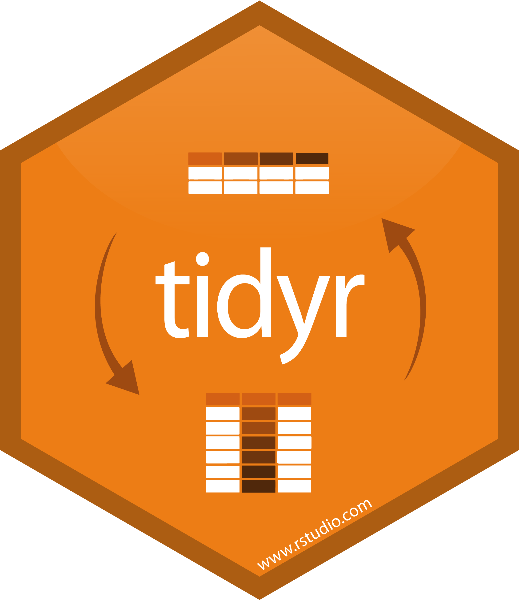

tb <- read_csv(here::here("data/TB_notifications_2025-07-22.csv"))
tb %>% # first we get the tb data
filter(year == 2023) %>% # then we focus on the most recent year
group_by(country) %>% # then we group by country
summarize(
cases = sum(c_newinc, na.rm=TRUE) # to create a summary of all new cases
) %>%
arrange(desc(cases)) # then we sort countries to show highest number of new cases firstTidying your data
SISBID 2026
https://github.com/dicook/SISBID
Using tidyr, dplyr
- Writing readable code using pipes
- What is tidy data? Why do you want tidy data? Getting your data into tidy form using tidyr.
- Reading different data formats
- String operations, working with text


The pipe operator %>% or |>
- read as
then x %>% f(y)andx |> f(y)is the same asf(x, y)%>%is part of thedplyrpackage (really,magrittr),|>is part of base R- pipes structure code as sequence of operations – as opposed to function order
g(f(x))
The pipe operator %>% or |>
%>%is part ofdplyrpackage (or more precisely, themagrittrpackage)- R 4.1 introduced the
|>base pipe (no package necessary) - An explanation of the (subtle) differences between the pipes can be found here
Pipe Example
tb <- read_csv(here::here("data/TB_notifications_2025-07-22.csv"))
tb |> # first we get the tb data
filter(year == 2023) |> # then we focus on the most recent year
group_by(country) |> # then we group by country
summarize(
cases = sum(c_newinc, na.rm=TRUE) # to create a summary of all new cases
) |>
arrange(desc(cases)) # then we sort countries to show highest number new cases first# A tibble: 215 × 2
country cases
<chr> <dbl>
1 India 2382714
2 Indonesia 804836
3 Philippines 575770
4 China 564918
5 Pakistan 475761
6 Nigeria 367250
7 Bangladesh 302813
8 Democratic Republic of the Congo 258069
9 South Africa 211810
10 Ethiopia 134873
# ℹ 205 more rowsWhat is tidy data?

- What do we expect tidy data to look like?
- maybe easier: what are sources of messiness?
🔮 👽 👼 TWO MINUTE CHALLENGE
- What are aspects of messiness in data that you have encountered?
Go to menti.com and enter code 2979 2396
Varying degree of messiness
What are the variables? Where are they located?
# A tibble: 6 × 4
Inst AvNumPubs AvNumCits PctCompletion
<chr> <dbl> <dbl> <dbl>
1 ARIZONA STATE UNIVERSITY 0.9 1.57 31.7
2 AUBURN UNIVERSITY 0.79 0.64 44.4
3 BOSTON COLLEGE 0.51 1.03 46.8
4 BOSTON UNIVERSITY 0.49 2.66 34.2
5 BRANDEIS UNIVERSITY 0.3 3.03 48.7
6 BROWN UNIVERSITY 0.84 2.31 54.6What’s in the column names of this data? What are the experimental units? What are the measured variables?
# A tibble: 3 × 12
id `WI-6.R1` `WI-6.R2` `WI-6.R4` `WM-6.R1` `WM-6.R2` `WI-12.R1` `WI-12.R2`
<chr> <dbl> <dbl> <dbl> <dbl> <dbl> <dbl> <dbl>
1 Gene 1 2.18 2.20 4.20 2.63 5.06 4.54 5.53
2 Gene 2 1.46 0.585 1.86 0.515 2.88 1.36 2.96
3 Gene 3 2.03 0.870 3.28 0.533 4.63 2.18 5.56
# ℹ 4 more variables: `WI-12.R4` <dbl>, `WM-12.R1` <dbl>, `WM-12.R2` <dbl>,
# `WM-12.R4` <dbl>What are the variables? What are the records?
V1 V2 V3 V4 V5 V9 V13 V17 V21 V25 V29 V33 V37 V41 V45 V49 V53
1 ASN00086282 1970 7 TMAX 141 124 113 123 148 149 139 153 123 108 119 112 126
2 ASN00086282 1970 7 TMIN 80 63 36 57 69 47 84 78 49 42 48 56 51
3 ASN00086282 1970 7 PRCP 3 30 0 0 36 3 0 0 10 23 3 0 5
4 ASN00086282 1970 8 TMAX 145 128 150 122 109 112 116 142 166 127 117 127 159
5 ASN00086282 1970 8 TMIN 50 61 75 67 41 51 48 -7 56 62 47 33 67
6 ASN00086282 1970 8 PRCP 0 66 0 53 13 3 8 0 0 0 3 5 0
V57 V61 V65 V69 V73 V77 V81 V85 V89 V93 V97
1 112 115 133 134 126 104 143 141 134 117 142
2 36 44 39 40 58 15 33 51 74 39 66
3 0 0 0 0 0 8 0 18 0 0 0
4 143 114 65 113 125 129 147 161 168 178 161
5 84 11 41 18 50 22 28 74 94 73 88
6 0 64 3 99 36 8 0 0 0 8 36What are the variables? What are the experimental units?
# A tibble: 6 × 22
iso2 year m_04 m_514 m_014 m_1524 m_2534 m_3544 m_4554 m_5564 m_65 m_u
<chr> <dbl> <dbl> <dbl> <dbl> <dbl> <dbl> <dbl> <dbl> <dbl> <dbl> <dbl>
1 ZW 2003 NA NA 133 874 3048 2228 981 367 205 NA
2 ZW 2004 NA NA 187 833 2908 2298 1056 366 198 NA
3 ZW 2005 NA NA 210 837 2264 1855 762 295 656 NA
4 ZW 2006 NA NA 215 736 2391 1939 896 348 199 NA
5 ZW 2007 6 132 138 500 3693 0 716 292 153 NA
6 ZW 2008 NA NA 127 614 0 3316 704 263 185 0
# ℹ 10 more variables: f_04 <dbl>, f_514 <dbl>, f_014 <dbl>, f_1524 <dbl>,
# f_2534 <dbl>, f_3544 <dbl>, f_4554 <dbl>, f_5564 <dbl>, f_65 <dbl>,
# f_u <dbl>What are the variables? What are the observations?
religion <$10k $10-20k $20-30k $30-40k
1 Agnostic 27 34 60 81
2 Atheist 12 27 37 52
3 Buddhist 27 21 30 34
4 Catholic 418 617 732 670
5 Don’t know/refused 15 14 15 1110 week sensory experiment, 12 individuals assessed taste of french fries on several scales (how potato-y, buttery, grassy, rancid, paint-y do they taste?), fried in one of 3 different oils, replicated twice.
First few rows:
# A tibble: 4 × 9
time treatment subject rep potato buttery grassy rancid painty
<fct> <fct> <fct> <dbl> <dbl> <dbl> <dbl> <dbl> <dbl>
1 1 1 3 1 2.9 0 0 0 5.5
2 1 1 3 2 14 0 0 1.1 0
3 1 1 10 1 11 6.4 0 0 0
4 1 1 10 2 9.9 5.9 2.9 2.2 0 What is the experimental unit? What are the factors of the experiment? What was measured? What do you want to know?
Messy data patterns
There are various features of messy data that one can observe in practice. Here are some of the more commonly observed patterns:
- Column headers are not just variable names, but also contain values
- Variables are stored in both rows and columns, contingency table format
- One type of experimental unit stored in multiple tables
- Dates in many different formats
Tidy Data Conventions
- Data is contained in a single table
- Each observation forms a row (no data info in column names)
- Each variable forms a column (no mashup of multiple pieces of information)
Long and Wide
Long form: one measured value per row. All other variables are descriptors (key variables) - good for modelling, terrible for most other analyses, e.g. correlation matrix
Widest form: all measured values for an entity are in a single row.
Wide form: measurements are arranged by some of the descriptors in columns (for direct comparisons)
Tidy verbs
pivot_longer: get information out of names into columnspivot_wider: make columns of observed data for levels of design variables (for comparisons)separate/unite: split and combine columnsnest/unnest: make/unmake variables into sub-data frames of a list variable
Pivot to long form
data |> pivot_longer(cols, names_to = "name", values_to = "value", ...)pivot_longerturns a wide format into a long formattwo new variables are introduced (in key-value format): name and value
coldefines which variables should be combined

Pivoting: an example
Variable Selectors
data |> pivot_longer(cols, names_to = "key", values_to = "value", ...)colsargument identifies variables that should be combined.Pattern Selectors can be used to identify variables by name, position, a range (using
:), a pattern, or a combination of all.
Examples of pattern selectors
starts_with(match, ignore.case = TRUE, vars = NULL)other select functions:
ends_with,contains,matches.For more details, see
?tidyselect::language
TB notifications
New notifications of TB have the form new_sp_<sex><age group>:
read_csv(here::here("data/TB_notifications_2025-07-22.csv")) |>
dplyr::select(country, iso3, year, starts_with("new_sp_")) |>
na.omit() |>
head()
# A tibble: 6 × 23
country iso3 year new_sp_m04 new_sp_m514 new_sp_m014 new_sp_m1524
<chr> <chr> <dbl> <dbl> <dbl> <dbl> <dbl>
1 Afghanistan AFG 2010 4 193 197 986
2 Afghanistan AFG 2012 0 188 188 1116
3 Albania ALB 2005 0 0 0 26
4 Albania ALB 2006 1 4 5 24
5 Albania ALB 2007 0 0 0 19
6 Albania ALB 2009 0 0 0 22
# ℹ 16 more variables: new_sp_m2534 <dbl>, new_sp_m3544 <dbl>,
# new_sp_m4554 <dbl>, new_sp_m5564 <dbl>, new_sp_m65 <dbl>, new_sp_mu <dbl>,
# new_sp_f04 <dbl>, new_sp_f514 <dbl>, new_sp_f014 <dbl>, new_sp_f1524 <dbl>,
# new_sp_f2534 <dbl>, new_sp_f3544 <dbl>, new_sp_f4554 <dbl>,
# new_sp_f5564 <dbl>, new_sp_f65 <dbl>, new_sp_fu <dbl>Pivot Longer: TB notifications
create two new variables: name and value
namecontains all variable names starting with “new_sp_”valuecontains all values of the selected variables
tb1 <- read_csv(here::here("data/TB_notifications_2025-07-22.csv")) |>
dplyr::select(country, iso3, year, starts_with("new_sp_")) |>
pivot_longer(starts_with("new_sp_"))
tb1 |> na.omit() |> head()
# A tibble: 6 × 5
country iso3 year name value
<chr> <chr> <dbl> <chr> <dbl>
1 Afghanistan AFG 1997 new_sp_m014 0
2 Afghanistan AFG 1997 new_sp_m1524 10
3 Afghanistan AFG 1997 new_sp_m2534 6
4 Afghanistan AFG 1997 new_sp_m3544 3
5 Afghanistan AFG 1997 new_sp_m4554 5
6 Afghanistan AFG 1997 new_sp_m5564 2Separate columns
data |> separate_wider_delim (col, delim, names, ...)- split column
colfrom data frameframeinto a set of columns as specified innames delimis the delimiter at which we split into columns, splitting separator.
Separate TB notifications
Work on name:
tb2 <- tb1 |>
separate_wider_delim(
name, delim = "_",
names=c("toss_new", "toss_sp", "sexage"))
tb2 |> na.omit() |> head()
# A tibble: 6 × 7
country iso3 year toss_new toss_sp sexage value
<chr> <chr> <dbl> <chr> <chr> <chr> <dbl>
1 Afghanistan AFG 1997 new sp m014 0
2 Afghanistan AFG 1997 new sp m1524 10
3 Afghanistan AFG 1997 new sp m2534 6
4 Afghanistan AFG 1997 new sp m3544 3
5 Afghanistan AFG 1997 new sp m4554 5
6 Afghanistan AFG 1997 new sp m5564 2Separate columns
data %>% separate_wider_position(col, widths, ...)
- split column
colfromframeinto a set of columns specified inwidths widthsis named numeric vector where the names become column names; unnamed components will be matched but not included.
Separate TB notifications again
Now split sexage into first character (m/f) and rest.
tb3 <- tb2 %>% dplyr::select(-starts_with("toss")) |> # remove the `toss` variables
separate_wider_position(
sexage,
widths = c(sex = 1, age = 4),
too_few = "align_start"
)
tb3 |> na.omit() |> head()
# A tibble: 6 × 6
country iso3 year sex age value
<chr> <chr> <dbl> <chr> <chr> <dbl>
1 Afghanistan AFG 1997 m 014 0
2 Afghanistan AFG 1997 m 1524 10
3 Afghanistan AFG 1997 m 2534 6
4 Afghanistan AFG 1997 m 3544 3
5 Afghanistan AFG 1997 m 4554 5
6 Afghanistan AFG 1997 m 5564 2Your turn
Read the genes data from folder data. Column names contain data and are kind of messy.
Produce the data frame called gtidy as shown below:
Plot the genes data overlaid with group means

{kind=link}
{kind=link}
Resources
- The tidy tools manifesto
- Posit cheatsheets
- Wickham (2007) Reshaping data
- broom vignettes, David Robinson
 This work is licensed under a Creative Commons Attribution-NonCommercial-ShareAlike 4.0 International License.
This work is licensed under a Creative Commons Attribution-NonCommercial-ShareAlike 4.0 International License.